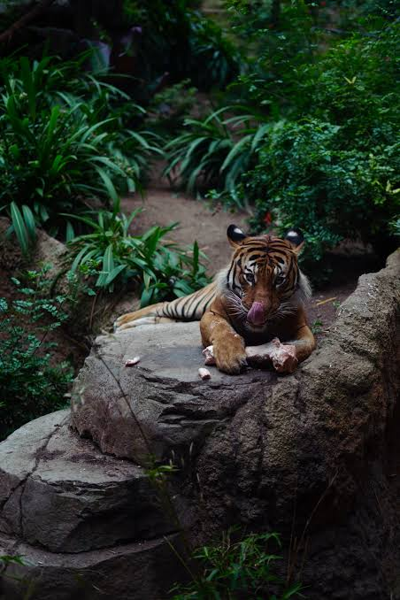

Artikel tentang kesehatan dan kelestarian harimau

Harimau merupakan salah satu hewan predator yang memiliki peran penting dalam menjaga keseimbangan ekosistem. Oleh karena itu, kesehatan harimau perlu dijaga agar populasinya tetap dapat bertahan hidup.
Kesehatan harimau dipengaruhi oleh makanan, air, kondisi habitat, serta lingkungan tempat hidupnya. Harimau membutuhkan makanan yang cukup dan lingkungan yang aman untuk mendukung kehidupannya.
Habitat yang baik sangat penting bagi kesehatan harimau. Hutan menyediakan tempat berlindung, air, dan sumber makanan. Oleh karena itu, menjaga hutan juga berarti menjaga kehidupan harimau.
Menjaga kesehatan harimau tidak hanya dilakukan dengan memperhatikan kondisi tubuhnya, tetapi juga dengan menjaga habitat dan lingkungan tempat hidupnya. Upaya konservasi sangat penting agar harimau tetap lestari.